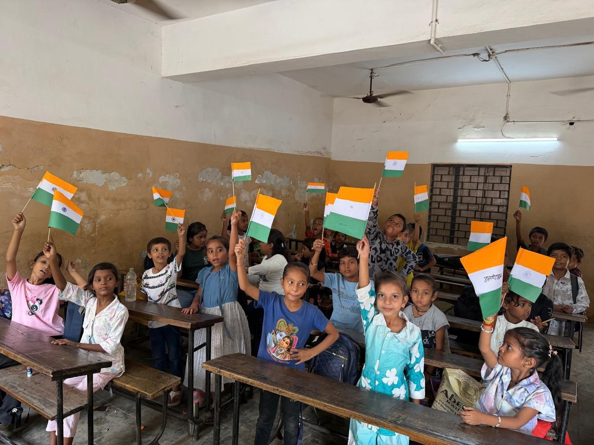

Narol medical OPD supplies · January 2024 archive
Narol medical OPD supplies · January 2024 archive Health & Medical
Weekly medical OPDs
13 weekly sessions provided consultations, medication support and routine check-ups.
881OPD visits
Explore programme →Sashakt began in Narol in 2021. Today, the centre helps families access healthcare, education, skills training and earning opportunities.
Discover activities ↓July–September 2026 · Counts include repeat visits and participation.
Narol medical OPD supplies · January 2024 archive 13 weekly sessions provided consultations, medication support and routine check-ups.
Learners completed three months of training in tailoring, beauty therapy, data entry and GST with Tally, followed by graduation in September.

Narol Bal Sashakt activity · Q2 report archiveCreative learning, arts, sports, English and age-appropriate activities build confidence.
 Narol Science City visit · Q2 report archive
Narol Science City visit · Q2 report archive On 27 September 2026, children explored interactive science exhibits and hands-on learning.
495 sessions across the Narol schools brought practical STEM concepts into classrooms.
The 8 August eye screening camp and the August dental camp promoted preventive healthcare.
The Salon and Studio help people practise their skills and earn. The report lists 21 salon and 29 studio participants.
Community, school and skilling sessions encourage financial knowledge and access to services.
Photographs: Sashakt activity archives.